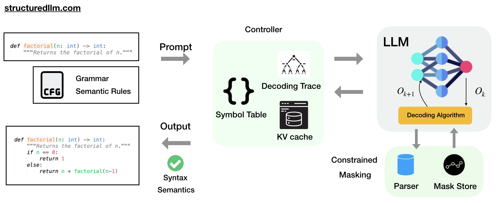

Transforming structured large language model generation

The Structured LLM project makes it easy to use syntactic and semantic constraints to get precise and reliable outputs from large language models. Our research develops novel frameworks that ensure LLM-generated content adheres to specific format rules and grammar specifications for languages like JSON, SQL, Python, and Java.
Through innovations like grammar augmentation, iterative structured generation with backtracking, and reasoning-augmented constrained decoding, we aim to eliminate syntax and semantic errors and improve the overall quality of structured outputs for applications in code generation, data serialization formats, and symbolic reasoning tasks.